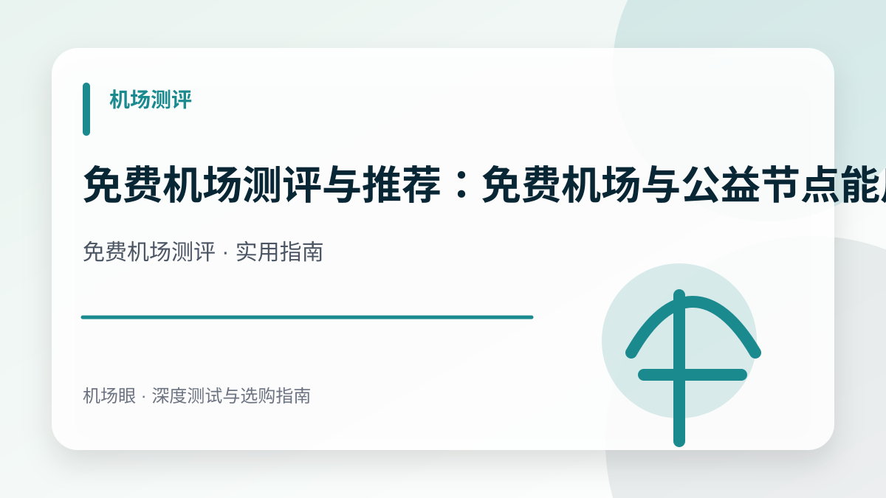

机场测评 · 2026-08-20
免费机场测评与推荐：免费机场与公益节点能用吗？安全性与速度实测
免费机场测评与推荐：免费机场与公益节点能用吗？安全性与速度实测。围绕免费机场测评给出原理说明、风险边界、操作步骤、检查信号与常见误区。
搜索“免费机场测评”时，真正需要解决的不是找到一句绝对答案，而是建立一套可以重复验证的判断方法。本文面向寻找免费梯子、公益节点或希望零成本上网的用户，用尽量清楚的方式拆解关键概念、选择步骤、常见误区和实际检查清单。
先给结论：判断重点是什么
免费机场与公益节点大多依赖广告赞助或流量限制，线路通常为低成本公网直连，存在隐私泄漏、日志记录、速度受限和随时失效风险。任何服务的表现都会受到所在城市、运营商、本地网络、设备、客户端版本和测试时段影响，因此页面参数适合用来初筛，最终决定应建立在自己的实际测试上。
对普通用户来说，最有效的思路是“先排除明显风险，再验证核心需求”。不要同时追求最低价格、最高速度、无限设备、永久稳定和全部平台解锁。把最重要的两到三个需求排在前面，反而更容易选到适合自己的方案。
为什么这个话题现在值得关注
免费往往是昂贵的开始，维护服务器和跨境带宽均有固定成本，免费服务商可能通过广告投放、出售浏览数据或诱导下载第三方软件获利。
一个典型使用场景
适合临时查阅资料、紧急下载配置文件或短期测试；长期高频使用建议搭配低价付费机场体验更佳。
关键实体：免费机场、公益节点、免费梯子、隐私安全、带宽限速。理解这些名词的关系，比单独记住某个产品或协议名称更有用。
免费机场测评需要关注的四个信号
- 免费套餐的每日流量上限与连接限速
- 节点更新频率与长效可用性
- 客户端或网站是否包含强制广告与弹窗
- 服务商是否有明确的隐私政策与日志声明
这四项应组合判断。如果某一项非常突出，其他项目却含糊不清，就需要进一步核对。例如速度很高但没有说明测试时间，或者折扣很低却只支持多年预付，都不适合直接作为购买依据。
推荐的实际操作步骤
- 仅在可信的公益发布页或官网注册获取订阅
- 导入客户端后先测试节点连通性与实际延迟
- 避免在免费节点上登录银行、支付或社交主账号
- 结合个人需求评估是否升级到独立付费用户
执行时建议保留简单记录，包括日期、节点地区、使用网络、延迟、速度和实际应用表现。连续几天的数据比一次截图更可靠，也便于在出现故障时判断问题来自本地、客户端、线路还是服务端。
如何看待速度、延迟与稳定性
速度决定大文件下载和高码率视频的上限；延迟影响网页响应、远程桌面和交互体验；抖动代表延迟是否稳定；丢包则会直接造成卡顿、重传和连接中断。四项指标不能互相替代。一个峰值很高但频繁丢包的节点，实际体验可能不如速度稍低但波动更小的节点。
建议在自己最常使用的时间测试，尤其是工作日晚上。测试时固定节点、测速服务器和设备，连续运行多次，再用视频播放、网页访问、AI 对话或会议等真实场景复核。这样得到的结论更接近长期使用体验。
价格与优惠应该怎么比较
月费只是成本的一部分，还要核对流量、倍率、设备数、重置日期、退款条件与优惠后的续费价格。七折价格可以用原价乘以 0.7 计算，但最终应以结算页为准。第一次购买优先选择月付，确认稳定后再考虑更长周期。
如果一个套餐比同类产品便宜很多，应进一步查看是否限制高速节点、流媒体地区、同时在线设备或售后范围。合理的优惠能降低试用成本，但不应该成为忽略风险和服务质量的理由。
最常见的四个误区
- 在未知来源的免费节点上输入敏感账号密码
- 相信所谓“永久免费且不限速”的营销宣传
- 将免费机场作为唯一的上网通道
- 下载安装带有恶意木马的专属免费客户端
这些误区的共同点，是用单一指标替代完整判断。解决办法并不复杂：减少预付周期、保留测试记录、保护订阅信息，并准备一个不同线路的备用方案。
适合新手的检查清单
- 确认官网、套餐和付款页面属于同一服务主体。
- 先买月付或小流量套餐，不因折扣直接长期预付。
- 在自己的运营商和常用设备上测试。
- 核对订阅、倍率、流量重置和设备限制。
- 验证最常用的两个实际场景，而不只是测速。
- 保存订单记录，并了解工单与退款入口。
常见问题
一次测速能代表长期表现吗？
不能。一次测速只反映当时的节点、网络和服务器状态。至少应覆盖白天与晚高峰，并连续观察数天。
排名越高就一定越适合我吗？
不一定。排名用于缩小范围，最终仍要看你的运营商、地区、设备、预算和主要用途。
出现问题时应该先换服务吗？
建议先检查本地网络、客户端、订阅状态和单个节点，再查看官方公告。确认是持续性服务问题后，再考虑切换。
总结
免费机场测评的核心不是追逐宣传中的最大数字，而是用一致的方法验证长期体验。先明确需求，选择短周期套餐，记录晚高峰表现，核对价格与规则，并保护账号和订阅信息。做到这些，即使市场上的产品和协议持续变化，也能更稳妥地做出选择。